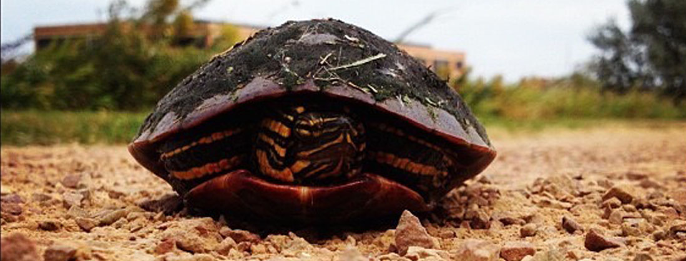
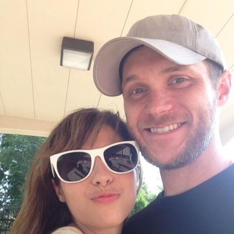

Projects
A bit about me

I Started my coding journey in May of 2014 and haven't looked back since. I started off building a simple static page with some html and css. I can remember how frustrating it was to try to get the elements where I wanted them to be, and how rewarding it was when I finally figured it out. I eventually attended Prime Digital Academy to learn Full-stack development. However through this process I discover my true passion was in Front-end development. I have been working actively since July 2015 to improve my front-end skills.